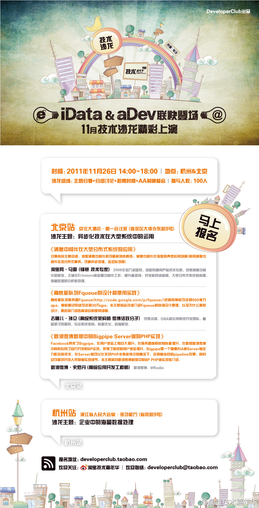

淘宝的技术活动办到北京来啦, 欢迎欢迎!//@曾宪杰_华黎: @Ada李力 @贺辉群DavidHe //@曾宪杰_华黎:转发微博.@图灵杨海玲 @图灵谢工 @TimYang @吴炳锡 @吴永强去哪儿 @kobe @唐福林 @jackbillow @steadwater @pku侯明强 ...... 不一个个点名了哈。26号下午有空就来京仪这边参加技术沙龙玩儿哈。
@阿里云云栖号:
#北京站.aDev技术沙龙#本期主题是《异步化技术在大型系统中的运用》，将邀请到淘宝网技术专家马震@mz1999 ，新浪微博高级应用开发工程师史罗丹@Rodin ，去哪儿网高级系统架构师孙立@sunli1223 作为分享嘉宾为工程师们分享！报名地址： 网页链接
网页链接
- 